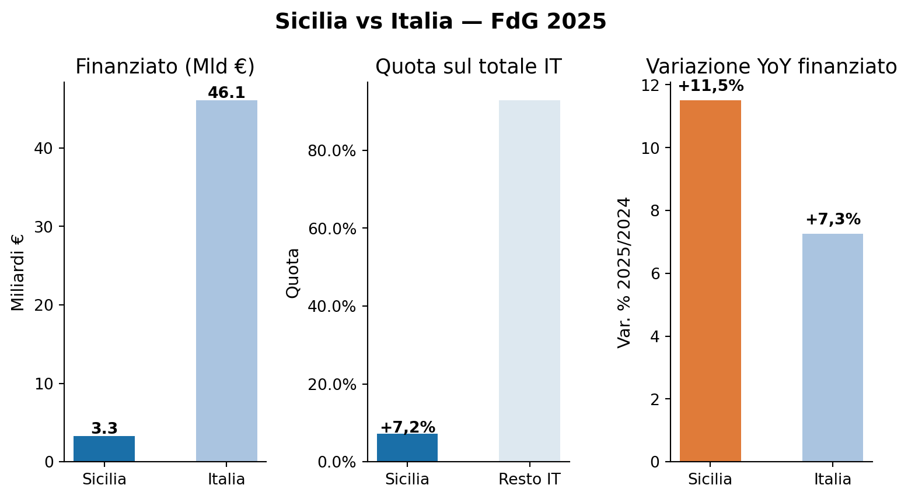
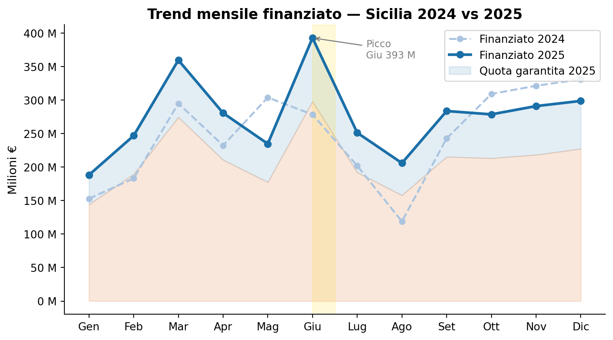
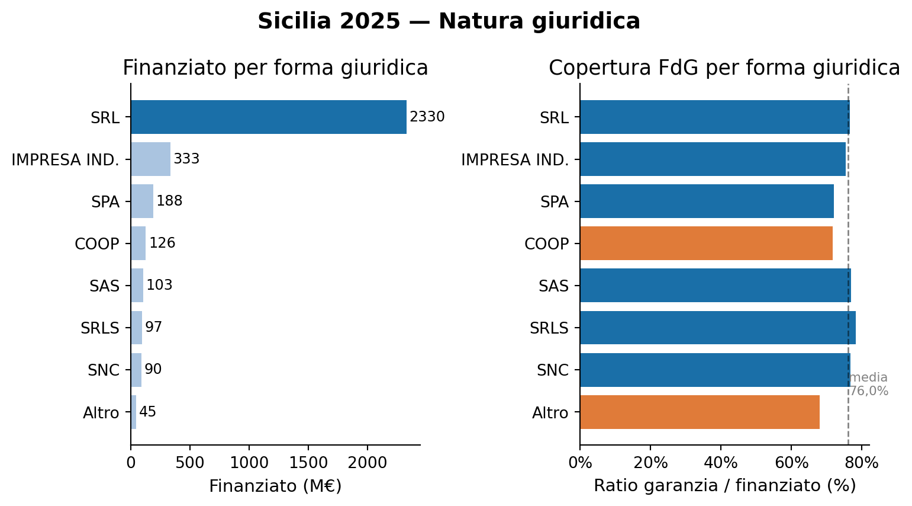
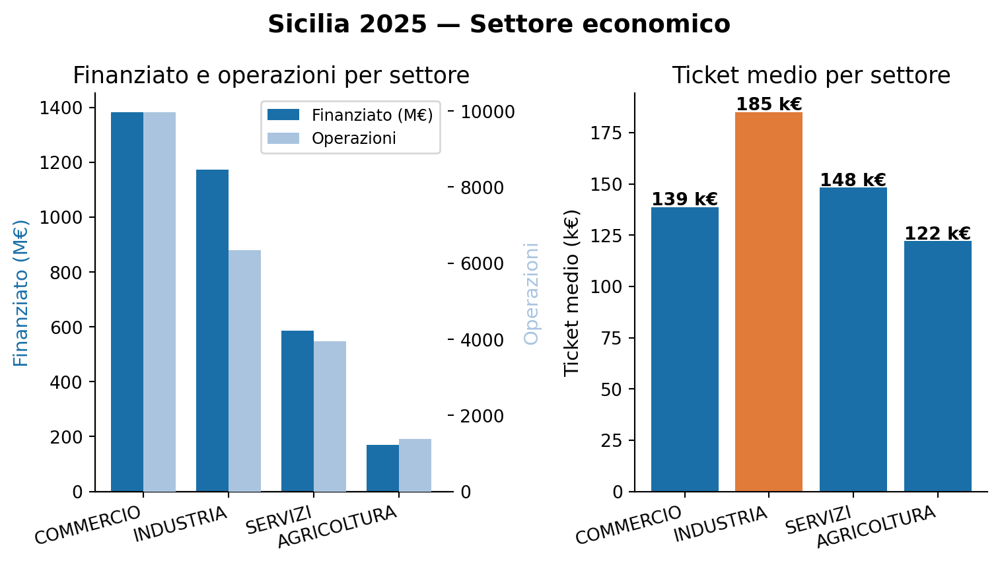
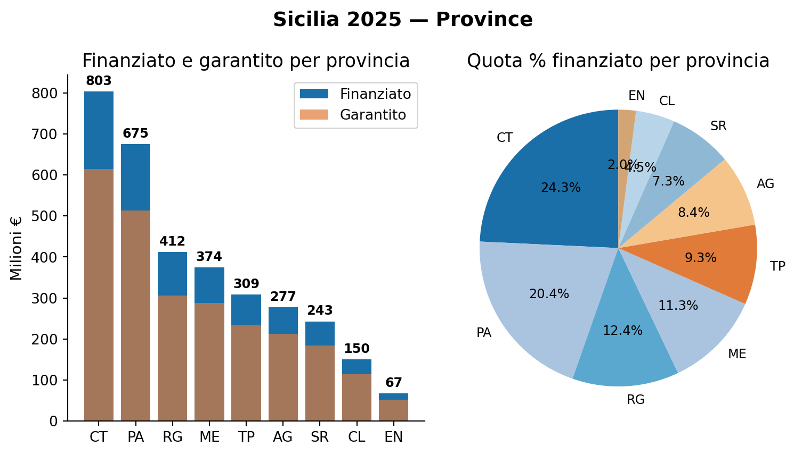
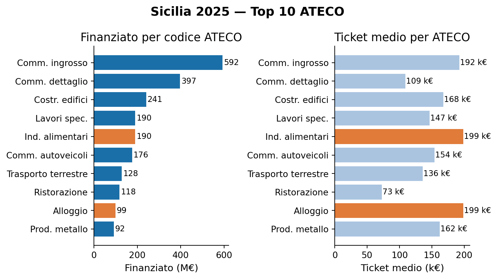

Fondo di Garanzia — Sicilia 2025
Analisi operazioni per provincia, settore e natura giuridica
Paolo Volterra ![]()
Fondo di Garanzia, Sicilia, credito, garanzia pubblica, PMI
1 1. Sicilia vs Italia

Figura 1: Sicilia vs Italia — FdG 2025
| Sicilia | Italia | |
|---|---|---|
| Operazioni | 21.655 | 247.808 |
| Finanziato (M€) | 3.311,3 | 46.068,8 |
| Garantito (M€) | 2.516,9 | 31.940,8 |
| Quota su Italia | +7,2% | 100% |
| Var. YoY finanziato | +11,5% | +7,3% |
| Ticket medio (k€) | 153 | 13 |
La Sicilia cresce nel 2025 a un ritmo più che sostenuto: +11,5% YoY, superiore di oltre quattro punti percentuali al tasso nazionale (+7,3%). La regione intercetta il 7,2% del finanziato nazionale con 21.655 operazioni, consolidando il proprio peso nel Mezzogiorno. Il ticket medio siciliano (153 k€) è tuttavia inferiore alla media italiana (186 k€), segnale di un tessuto produttivo con forte presenza di micro e piccole imprese nel commercio al dettaglio e nei servizi di prossimità, particolarmente denso nell’area metropolitana di Catania e nel commercio all’ingrosso dei porti. La combinazione di alta crescita YoY e ticket contenuto indica espansione nel numero di operazioni più che nell’importo unitario.
2 2. Trend mensile 2025

Figura 2: Trend mensile finanziato — Sicilia 2024 vs 2025
| Mese | Finanziato 2025 (M€) | Garantito 2025 (M€) | Δ vs 2024 |
|---|---|---|---|
| Gen | 188,2 | 144,1 | +23,1% |
| Feb | 246,8 | 189,2 | +34,8% |
| Mar | 359,5 | 274,2 | +21,9% |
| Apr | 280,6 | 210,7 | +20,8% |
| Mag | 234,7 | 177,3 | -22,7% |
| Giu | 392,7 | 297,9 | +41,1% |
| Lug | 251,2 | 192,0 | +24,4% |
| Ago | 205,9 | 157,8 | +73,3% |
| Set | 283,6 | 215,2 | +16,8% |
| Ott | 278,6 | 213,1 | -9,8% |
| Nov | 290,9 | 218,2 | -9,4% |
| Dic | 298,7 | 227,2 | -9,7% |
Il profilo mensile siciliano del 2025 è asimmetrico: la crescita si concentra nel semestre marzo-settembre, con giugno picco assoluto a 392,7 M€ (+41,1% YoY). Agosto mostra la variazione YoY più marcata (+73,3%), riflettendo il decollo del settore ricettivo estivo rispetto al 2024. Il secondo semestre 2025 segna invece un raffreddamento: ottobre, novembre e dicembre risultano tutti sotto i corrispondenti mesi 2024 — che erano stati eccezionalmente forti — generando un effetto di base sfavorevole. Maggio (−22,7%) è penalizzato dall’accumulo di pratiche processate nel trimestre precedente. Il saldo annuo rimane nettamente positivo grazie al primo semestre.
3 3. Natura giuridica

Figura 3: Sicilia 2025 — Natura giuridica
| Forma giuridica | Operazioni | Finanziato (M€) | Garantito (M€) | Ratio gar/fin |
|---|---|---|---|---|
| SRL | 11.229 | 2.330.0 | 1.785.4 | 76.6% |
| IMPRESA IND. | 5.665 | 332.8 | 251.1 | 75.5% |
| SPA | 309 | 188.1 | 135.6 | 72.1% |
| COOP | 603 | 126.0 | 90.4 | 71.7% |
| SAS | 1.065 | 102.8 | 79.1 | 77.0% |
| SRLS | 1.493 | 96.7 | 75.7 | 78.3% |
| SNC | 932 | 89.9 | 69.0 | 76.7% |
| Altro | 359 | 44.9 | — | — |
| Totale | 21.655 | 3.311.3 | 2.516.9 | 76.0% |
Le SRL rappresentano il 52% delle operazioni e il 70% del finanziato — peso inferiore a quello tipico delle grandi regioni continentali (Puglia 74%, Campania 80%), segnale di un tessuto produttivo con maggiore presenza di imprese individuali e società di persone. Le SPA siciliane, pur numericamente ridotte (309 unità), raggiungono 188,1 M€ con un ticket medio implicito di 609 k€ — il più alto in assoluto, espressione delle medie imprese industriali e della grande distribuzione organizzata. Le cooperative (71,7%) e le SPA (72,1%) registrano i ratio garanzia/finanziato più bassi, per la disponibilità di garanzie mutualistiche e patrimoniali alternative.
4 4. Settore economico

Figura 4: Sicilia 2025 — Settore economico
| Settore | Operazioni | Finanziato (M€) | Garantito (M€) | Ticket medio (k€) | Ratio gar/fin |
|---|---|---|---|---|---|
| COMMERCIO | 9.972 | 1.382.7 | 1.051.5 | 139 | 76.0% |
| INDUSTRIA | 6.341 | 1.173.3 | 903.6 | 185 | 77.0% |
| SERVIZI | 3.955 | 586.0 | 456.2 | 148 | 77.9% |
| AGRICOLTURA | 1.387 | 169.3 | 105.5 | 122 | 62.3% |
Il commercio domina sia per operazioni (46%) che per finanziato (42%), riflettendo la centralità dei circuiti distributivi nell’economia siciliana — dai mercati all’ingrosso di Catania e Palermo alla rete capillare del commercio di prossimità. L’industria registra il ticket più elevato (185 k€, in linea con la media nazionale) grazie a manifattura agroalimentare, cantieristica, petrolchimica siracusana e produzione di materiali da costruzione. I servizi mostrano il ratio garanzia/finanziato più alto (77,9%), tipico di imprese a bassa patrimonializzazione dove la garanzia pubblica è il principale sostituto del collaterale reale. L’agricoltura presenta il ticket più basso (122 k€) e la copertura FdG più contenuta (62,3%), per l’affiancamento di strumenti ISMEA e PSR FEASR nella filiera cerealicola, agrumicola e olivicola.
5 5. Province

Figura 5: Sicilia 2025 — Province
| Provincia | Finanziato (M€) | Garantito (M€) | Operazioni | Ticket medio (k€) |
|---|---|---|---|---|
| CT | 803.0 | 614.5 | 4.811 | 167 |
| PA | 675.3 | 512.5 | 4.424 | 153 |
| RG | 411.9 | 306.5 | 2.770 | 149 |
| ME | 374.0 | 287.9 | 2.766 | 135 |
| TP | 309.0 | 232.8 | 1.967 | 157 |
| AG | 277.1 | 212.2 | 2.018 | 137 |
| SR | 243.0 | 184.7 | 1.469 | 165 |
| CL | 150.4 | 114.2 | 885 | 170 |
| EN | 67.5 | 51.6 | 545 | 124 |
Il dato più significativo è il primato di Catania (803 M€, 24% del totale regionale) su Palermo (675 M€, 20%): la provincia etnea supera il capoluogo regionale, riflettendo la trasformazione del polo catanese in motore manifatturiero e commerciale dell’isola (polo elettronico, distretto agro-industriale etneo, porto container). Ragusa si posiziona terza con 411,9 M€ — quota sproporzionata rispetto alla sua dimensione demografica — grazie alla densità di imprese nel distretto della floricoltura protetta, della mozzarella e del pomodoro da industria. Trapani (309 M€) esprime il peso della filiera vitivinicola (Marsala, Grillo, Catarratto). Le province interne di Caltanissetta ed Enna chiudono la classifica, con ticket medio di 170 e 124 k€ rispettivamente.
6 6. Top 10 settori ATECO

Figura 6: Sicilia 2025 — Top 10 ATECO
| ATECO | Descrizione | Finanziato (M€) | Operazioni | Ticket medio (k€) |
|---|---|---|---|---|
| 46 | Comm. ingrosso | 592.4 | 3.079 | 192 |
| 47 | Comm. dettaglio | 397.4 | 3.638 | 109 |
| 41 | Costr. edifici | 240.7 | 1.434 | 168 |
| 43 | Lavori spec. | 190.3 | 1.298 | 147 |
| 10 | Ind. alimentari | 190.0 | 957 | 199 |
| 45 | Comm. autoveicoli | 175.9 | 1.140 | 154 |
| 49 | Trasporto terrestre | 128.3 | 945 | 136 |
| 56 | Ristorazione | 118.0 | 1.617 | 73 |
| 55 | Alloggio | 98.9 | 498 | 199 |
| 25 | Prod. metallo | 91.6 | 564 | 162 |
Il commercio all’ingrosso (ATECO 46) guida con 592,4 M€ e 3.079 operazioni: la rete distributiva che fa capo ai mercati agroalimentari di Catania e Palermo e ai porti container è il principale utilizzatore del FdG in Sicilia. ATECO 10 (Industrie alimentari) e ATECO 55 (Alloggio) condividono il ticket medio più alto (199 k€), segnalando due asset strategici dell’economia isolana: la trasformazione agroalimentare (agrumi, pomodoro, prodotti ittici, vino) e le strutture ricettive che accompagnano la crescita turistica. La presenza di ATECO 45 (Commercio autoveicoli) tra i top 10 con 175,9 M€ è una specificità siciliana, legata all’elevata motorizzazione dell’isola e alle reti di concessionari e officine multimarca.